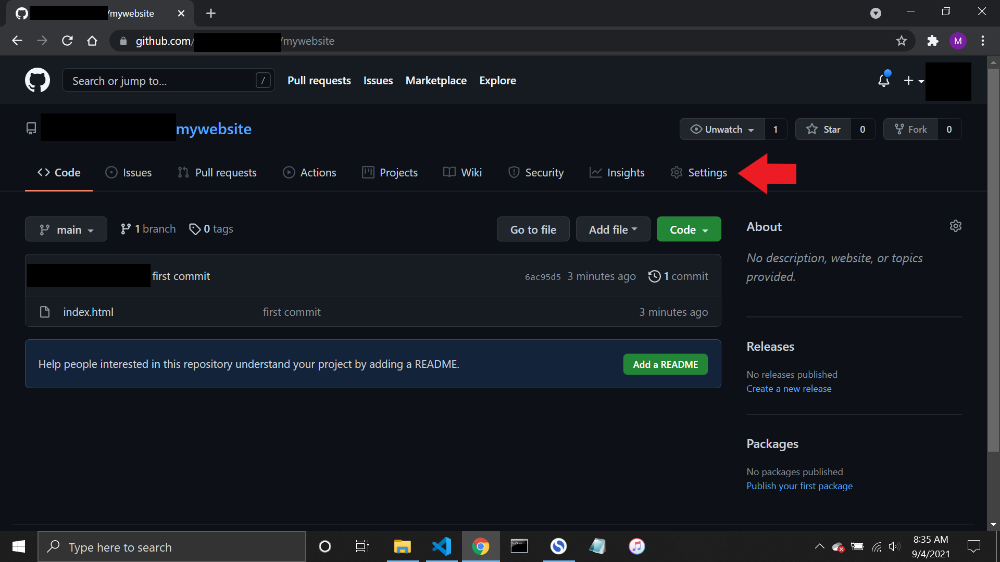
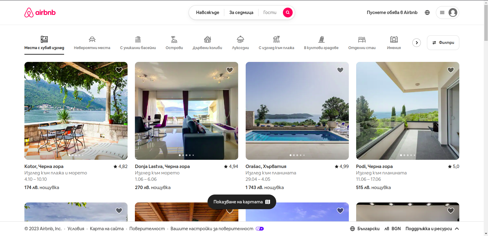
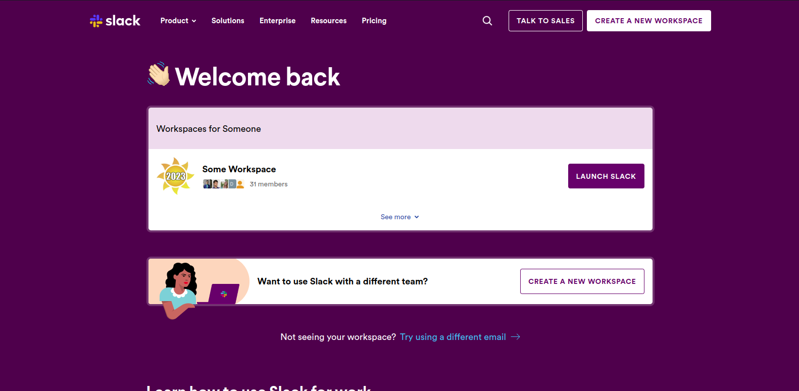

Представянето, в това число подреждането на съдържанието в една уеб страница е основният и най-важен казус в дизайна на графичния интерфейс. Съществуват множество опции, които позволяват да бъдат постигнати сходни резултати. Сред най-популярните методи е CSS Flexbox, но за да разберем защо се е наложил и да оценим предимствата му, е необходимо да проследим цялостната история на начините за представяне на съдържанието чрез CSS [1][2].
Двата основни типа елементи
Начините за изобразяване на елементите в HTML претърпяват известни промени, но обобщено могат да бъдат представени в следните две категории: блокови и последователни [3].
Блоковите елементи се представят като кутии, които се изнасят на нов ред и по този начин се отделят от останалото съдържание. Примери за блокови елементи са p, div, table, ul, nav, figure и други.
От друга страна, последователните елементи се визуализират непосредствено един след друг, без всеки да се обособява на отделен ред. Примери за такива елементи са span, img, a,label и други.
Представянето на елементите може да се изменя чрез свойството display. Блоковите елементи притежават свойството display:block, а последователните - display:inline. Съществуват още няколко възможни стойности на свойството display, сред които и flex, което представя изобразява елемента като адаптивен (flexible) контейнер, чието представяне се мени спрямо различни параметри, най-вече размерите на екрана. Именно такива адаптивни контейнери са предметът на този реферат, но за да разберем защо съществуват, нека проследим какво са правили хората в миналото.
Подреждане на съдържанието чрез таблици
Зората на 90-те. Появата на първите страници. Съдържанието им е опростено, с акцент върху информацията и най-важното - статично. То не се изменя спрямо действията на потребителя. Страниците през този период основно се състоят от следните елементи - заглавна част, страничен панел, съдържание и заключителна част. Не е трудно да видим сходството на това оформление със структурата на таблица. Затова неслучайно таблиците са основен способ за структуриране на съдържанието през този период.
Нещата се променят с навлизането на все повече графично съдържание под формата на изображения. Вследствие на това, популярност добива свойството float, което позволява на блоков елемент (например изображение) да “плава” на дадена страна, а текстът да го обвива. В началото на 2000-те обаче хитри програмисти осъзнават колко много може да се постигне, ако свойството се комбинира със солидно количество техники за разстояние между елементите и свойството position. Така се появяват първите страници с псевдодинамично съдържание, което (в известни граници) се променя спрямо големината на прозореца на браузъра. [4]
Модата се променя още веднъж с появата на първите смартфони, които позволяват ефективен достъп до Интернет. Сякаш за една нощ, уеб страниците вече трябва да имат съдържание, което изглежда добре както на компютър, така и на мобилен телефон. Бързо се проявяват недостатъците на използваните досега “хакерски” техники, често възползващи се от бъгове и недомислия в CSS стандарта.
За щастие програмистите успяват да запазят косите си от опадване, защото през 2012 година се появява тяхното спасение - display:flex. Това е първото CSS свойство, посветено изцяло на подредбата на съдържанието (то няма семантичен смисъл) и бързо се налага като любим избор на front-end разработчиците. То предоставя, бърз, удобен и последователен начин за красиво и смислено представяне на съдържанието на устройства с най-разнообразни размери без разглеждане и уточняване на различните случаи, позициониране и използване на плаващо съдържание.
Постигането на CSS Flexbox, или динамичен контейнер, става чрез настройки на контейнера родител, който за краткост ще наричаме flex контейнер, и чрез настройки на елементите наследници, които за краткост ще наричаме flex елементи. [5]
Свойства на flex-контейнера (контейнера родител)
И така, как се прави? Достатъчно е да просто да зададете свойството display:flex на родителския контейнер, чието съдържание искате да се подрежда динамично. Това автоматично задава някои настройки, които Вие можете да промените.
Задаване на посоката на подреждане
CSS Flexbox позволява динамично оформление на съдържанието в една посока, тоест по една ос – хоризонтална или вертикална. Тази ос се нарича главна ос. Тя се контролира от свойството flex-direction. По подразбиране тя е по хоризонтала (елементите се подреждат в редица/ редове) и се постига чрез flex-direction:row. Освен по редове, съдържанието може да се подрежда и вертикално (елементите застават в колони) чрез стойността flex-direction:column.
flex-direction:row подрежда съдържанието отляво надясно, а flex-direction:column – отгоре надолу. Това може да се промени. Стойността flex-direction:row-reverse подрежда съдържанието в ред, но отдясно наляво, а flex-direction:column-reverse – в колона, но отдолу нагоре.
Освен по главната ос, CSS Flexbox позволява настройки, например подравняване, и перпендикулярно на главната ос. Тази втора ос се нарича второстепенна.
Ако използваме flex-direction:row-reverse или flex-direction:row-reverse, главната ос е хоризонтална, а второстепенната ос – вертикална.
Ако използваме flex-direction:column или flex-direction:column-reverse, главната ос е вертикалната, а второстепенната е хоризонталната.
1
2
3
4
flex-direction:row
1
2
3
4
flex-direction:column
1
2
3
4
flex-direction:row-reverse
1
2
3
4
flex-direction:column-reverse
Фигура 1. Различните опции на свойството flex-direction
Внимание: Главна и второстепенна ос са ключови понятия за работата със CSS Flexbox. Уверете се, че ги разбирате, преди да продължите да четете по темата.
Пренасянето на съдържанието
Добре. Можем да подреждаме съдържанието в ред или колона, но какво става, когато имаме много елементи, за които един ред или една колона не стигат? Тук се проявява възможността за адаптивен дизайн спрямо размера на екрана чрез контролиране на свойството flex-wrap. По подразбиране то има стойност flex-wrap:nowrap, което означава, че при прекалено малък екран, съдържанието не се пренася на следващия ред, а се смалява или отрязва, за да се побере. Това се променя чрез flex-wrap:wrap, което позволява, когато съдържанието не се побира, да се пренесе на нов ред или колона. Друга възможна стойност е wrap-reverse, която пренася съдържанието, подобно на wrap, но в обратен ред.
Съкратен запис
Свойството flex-flow позволява съкратен запис на стойностите на свойствата flex-direction и flex-wrap: flex-flow: row wrap.
Подравняване на съдържанието
Когато съдържанието на flex контейнера се състои от няколко елемента, възниква въпросът как всички те да се наредят - в центъра, вляво или вдясно, в горната или в долната част и т.н.
Има три различни начина за подравняване на съдържанието – justify-content, align-items и align-content. Кой ще използвате зависи от ориентацията на flex контейнера. [6][7]
ВниманиеНека напомним, че посоката на контейнера, зададена чрез flex-direction, определя главната ос и перпендикулярната (второстепенната) ос. Контейнер със свойството flex-direction:row или flex-direction:row-reverse има хоризонтална главна ос, а контейнер със свойството flex-direction:column или flex-direction:column-reverse – главна вертикална ос.
Правилата са следните:
justify-content работи на главната ос;
align-content и align-items работят на второстепенната ос;
align-content работи само когато контейнерът се пренася (flex-wrap:wrap). Причината е, че, align-items подрежда елементите, когато не заемат всичкото пространство по второстепенната ос, а align-content подрежда редовете, а не елементите. Ако контейнерът не се пренася, той няма да има нови редове.
justify-content
justify-content работи на главната ос и определя подреждането на елементите, когато има останало свободно място.
flex-start
Подрежда елементите в началото на flex контейнера. Когато посоката на flex контейнера е:
flex-direction:row, елементите се нареждат вляво;
flex-direction:column, се нареждат горе;
flex-direction:row-reverse, елементите се нареждат вдясно;
flex-direction:column-reverse, се нареждат долу.
flex-end
Подрежда елементите в края на flex контейнера. Когато посоката на flex контейнера е:
flex-direction:row, елементите се нареждат вдясно;
flex-direction:column, се нареждат долу;
flex-direction:row-reverse, елементите се нареждат вляво;
flex-direction:column-reverse, се нареждат горе.
center
Подрежда елементите в центъра на flex контейнера.
space-between
Подрежда елементите така, че първият е плътно в началото, последният е плътно в края, а разстоянието между всички е еднакво.
space-around
Подрежда елементите така, че разстоянието около всеки елемент е еднакво. Разликата между space-between и space-around е, че space-around оставя пространство преди първия елемент и след последния.
Внимание: justify-content се влияе от посоката на писане на текста (direction). Горепосочените описания важат за езици, които се изписват отляво надясно (български, английски език и други). Ако посоката на изписване е отдясно наляво (както в арабския език), а посоката на flex контейнера: flex-direction:row, justify-content: flex-start ще подреди елементите отдясно наляво.
Внимание: Свойството се влияе от стойността на страничното отстояние margin. За повече информация, разгледайте секция Трикове и често задавани въпроси.
align-items
Свойството подравнява елементите на второстепенната ос. Стойността му по подразбиране е stretch.
stretch
Разтяга елементите така, че да заемат цялото възможно пространство по второстепенната ос. Ако второстепенната ос е вертикална, елементите се разтягат на височина, за да запълнят свободното пространство под и над тях. Ако второстепенната ос е хоризонтална, елементите се разтягат на широчина, за да запълнят пространството отстрани на тях. В резултат всички елементи стават равни на височина (или на ширина в зависимост от второстепенната ос).
flex-start
Запазва размерите на елементите. Подрежда елементите в посока началото на flex контейнера по отношение на второстепенната ос. Когато посоката на flex контейнера е:
flex-direction:row, елементите се подравняват отгоре;
flex-direction:column, се подравняват вляво;
flex-direction:row-reverse, елементите се нареждат отдолу;
flex-direction:column-reverse, се нареждат отдясно.
flex-end
Подрежда елементите в посока края на flex контейнера по отношение на второстепенната ос. Когато посоката на flex контейнера е:
flex-direction:row, елементите се подравняват отдолу;
flex-direction:column, се подравняват вдясно;
flex-direction:row-reverse, елементите се нареждат отгоре;
flex-direction:column-reverse, се нареждат вляво.
center
Подрежда елементите централно по второстепенната ос.
baseline
Подрежда елементите по второстепенната ос спрямо първата буква в текстовото съдържание в тях.
Внимание: align-items свойство на flex контейнера (родител), което задава на всички flex елементи (деца) стойността на свойството align-self, която по подразбиране е auto. Възможно е стойността на align-self да се промени от auto на някоя стойностите flex-start, flex-end, center, baseline за конкретен flex елемент (дете).
align-content
Когато съдържанието е разпределено на няколко реда или колони (flex-wrap:wrap), освен съдържанието на отделните елементи искаме да контролираме и разстоянието между редовете (колоните). Това се постига чрез свойството align-content. Подобно на align-items, работи по второстепенната ос.
flex-start
Нарежда всички редове (колони) плътно един до друг, започвайки от началото на flex контейнера.
flex-end
Нарежда всички редове (колони) плътно един до друг в края на flex контейнера.
center
Нарежда всички редове (колони) плътно един до друг и подравнява “групата” централно по второстепенната ос.
space-between
Подрежда редовете (колоните) така, че да имат равно разстояние помежду си. Не оставя разстояние преди първия ред и след последния ред.
space-around
Подрежда редовете така, че да имат равно разстояние преди, след и между себе си. На практика оставя разстояние преди първия ред и след последния ред.
stretch
Разпъва редовете по второстепенната ос, за да запълнят цялото свободно пространство.
Не, за щастие не се прави с margin! Може да се зададе еднакво разстояние между всички flex елементи чрез свойството gap, което е съкратен запис за row-gap и column-gap.
column-gap:40px
Задава разстояние (в случая от 40px) между всеки два елемента по главната ос.
row-gap:20px
Задава разстояние (в случая от 20px) между всеки два елемента по второстепенната ос.
gap:40px 20px
Съкратен запис, обединяващ горните два.
Таблица 4. Възможни стойности на gap
Свойства на flex елементите (елементите деца)
Подредба
Подредбата на елементите при показване на съдържанието не е необходимо да е същата като подредбата на елементите в кода. Конкретна подредба може да се зададе чрез свойството order, което приема неотрицателно цяло число. [8][9]
Разширяване
Може да се окаже колко голям е даден елемент спрямо останалите елементи във flex контейнера чрез свойството flex-grow. Стойността по подразбиране е 0, което означава “елементът да е толкова голям, колкото да се побере съдържанието”. Всички останали стойности, различни от нула, разширяват елементите пропорционално един на друг, за да заемат цялото останало пространство (с изключение на разстоянията между елементите и редовете, дефинирани чрез gap, align-content и т.н.)[9].
Свиване
Може да се укаже колко бързо да се свива даден елемент спрямо останалите елементи във flex контейнера чрез свойството flex-shrink. Стойността 0 означава “елементът да не свива, когато разстоянието по основната ос се намали”. Стойността по подразбиране е 1, което означава “елементът да се свива толкова, колкото и другите елементи, когато разстоянието по основната ос се намали”. Стойност 2,3 и т.н. свива дадения елемент 2, 3 и т.н. пъти по-бързо отколкото се свиват останалите елементи[9].
Първоначален размер
Свойството flex-basis задава първоначалния размер на даден flex елемент по главната ос. Разликата с flex-grow е, че размерът се задава в мерни единици, независимо от размерите на останалите flex елементи. Разликата с width/height (по главната ос) е, че при промяна на размера на flex контейнера, flex елементът не си променя размера – не се разширява, нито се свива, за разлика от случая с flex-basis[9].
Обобщено свойство flex
Свойството flex е съкратен запис на flex-grow, flex-shrink и flex-basis[9].
align-self
Свойството позволява да бъде предефинирана стойността за подредба по второстепенната ос, наследена от свойството align-items на родителския flex контейнер.[9]
Предимства
Технологията Flexbox има няколко ключови предимства пред алтернативните технологии – таблици, float и position:
Първият и единствен способ (допреди CSS Grid) с изцяло представителна функция – свойството няма семантичен смисъл;
Прост, последователен и много кратък синтаксис;
Възможност за автоматично преоразмеряване на елементите;
Лесно подравняване на елементите без необходимост от дефиниране на margin и други подобни свойства;
Възможност за представяне на елементите в последователност, различна от тази в кода;
Лесно влагане на едни flex контейнери в други;
Доказано средство за адаптивен уеб дизайн с минимални усилия;
Добра съвместимост с други CSS свойства, например CSS Grid;
Поддържа се от 98% от браузърите.
Недостатъци
Като всичко в реалността, технологията има и своите недостатъци:
Неинтуитивни имена на свойствата за подравняване align-items, align-content и justify-content и трудно възприемане на разликата между тях;
Успехът за работа с технологията зависи в голяма степен от две понятия – основна и второстепенна ос;
Отклонения от стандарта като justify-content:space-evenly и align-contentspace-evenly, които не сме споменали в този реферат;
CSS Flexbox предоставя контрол най-вече по една ос, за разлика от CSS Grid, където има силен контрол и върху двете оси – главна и второстепенна;
Малки, но все пак съществуващи разлики в имплементацията на различните браузъри;
98% поддръжка е приемлива стойност, но останалите 2% са предимно мобилни браузъри, които имат по-малък шанс да бъдат обновени. Това основно се отразява на потребители със стари мобилни телефони, а това противоречи на основната употреба на CSS Flexbox – за изграждане на адаптивен дизайн.
Кога да изберем Flexbox?
Изберете CSS Flexbox:
Пред таблици, position и float, когато организирането на информацията има чисто визуален, а не семантичен смисъл;
Когато искате да направите адаптивен уеб дизайн;
Когато искате да промените реда на елементите;
Пред CSS Grid, когато е необходим контрол само по една от осите.
Не използвайте CSS Flexbox (а CSS Grid):
Когато Ви трябва сложен контрол и по двете оси, например за изграждането на таблици с елементи, които се пренареждат спрямо ширината и височината на екрана (стандартните таблици не могат да се адаптират динамично спрямо размерите на екрана или броя елементи);
За конкретно позициониране на елементите и по ред, и по колона;
Когато трябва да насложите елементи (частично) един върху друг.
Не използвайте CSS Flexbox (a table):
Когато представянето на информация в таблица има семантичен смисъл.
Не използвайте CSS Flexbox (а float):
Когато искате да поставите снимка и да обвиете текст около нея.
Не използвайте CSS Flexbox (а position):
Когато настройвате само един елемент, а не поредица от елементи;
Когато трябва да настройте позицията на елемента спрямо целия документ или родителския елемент;
Когато трябва да застъпите/ припокриете два елемента;
Когато елементът, който настройвате, не трябва да се скролира заедно с останалото съдържание.
Flexbox + Grid
CSS Flexbox и CSS Grid са две технологии, които изпълняват сходни роли – организират динамичната подредба на съдържанието. Понякога те се конкурират и може/трябва да изберем само една от двете, но в повечето случаи се сработват отлично заедно. Има два такива основни случая.
Grid родителски елемент и елементи наследници, които са Flex
Използвайте този способ, когато всеки от елементите наследници трябва да има точно определено място, а съдържанието им се подрежда динамично спрямо размера им.
Пример: Grid body на Интернет страница с header, main и footer, които са flex контейнери.
Flex родителски елемент и елементи наследници, които са Grid
Използвайте тази конфигурация, когато елементите наследници трябва да се подреждат динамично по ред или колона, а съдържанието им изисква табличен изглед.
Prefixing
С цел максимална съвместимост с всички браузъри, понякога е необходим префикс – тоест, поясняване на свойството с префикса на доставчика му, например display:-webkit-flex.
Има две решения на проблема:
Използване на библиотеки като mixin, които решават проблема със съвместимостта, но ни принуждават да използваме различен синтаксис;
Да използваме инструменти като Autoprefixer, които автоматично добавят необходимите префикси към нашия код.
Трикове и често задавани въпроси
Динамичен дизайн
Винаги разработвайте уеб страниците, предвиждайки различни типове устройства. Най-популярният принцип е Mobile First. Както подсказва името му, се започва с дизайна на мобилния изглед. Той е най-труден, а телефоните имат най-ограничените по ресурси браузъри и трябва да бъдат най-улеснени. Това се постига чрез задаване на случаи за максимална (а не минимална) ширина. Примерно разпределение на случаите може да бъде това:
margin:autoна даден flex елемент “абсорбира” свободното пространство. Това е отличен начин да центрираме един flex елемент и по двете оси.
Понякога искаме част от flex елементите да имат едно подравняване, а друга част – друго. Тук margin:auto идва на помощ. Нека разгледаме случай, в който искаме първите няколко flex елемента да се подравняват в началото, а последните 1 или 2 – в края на контейнера. За целта задаваме стойност margin-top:autoна първия елемент от тези, които искаме да се подравнят в края на контейнера. В резултат flex елементите се разпределят така, че цялото свободно разстояние остава преди елемента с margin-top:auto.
За да можем да подредим снимките динамично, те трябва да са с еднаква височина, за да могат се превърнат във flex елементи. За да не се деформират снимките, всички те трябва да са със зададено свойство object-fit:cover. Остава последният ред, където ако снимките са малко, се разтягат неестествено, за да заемат останалото свободно пространство. За целта се добавя още един елемент, който има стойност flex-grow:10 или някое друго голямо число, за да заеме излишното празно пространство на последния ред. С цел защита на авторските права, вместо демо ще препратя ето тук.
Примерна употреба в реални приложения
Този реферат
Ctrl + Shift + I, за да разгледате кода.
Google Drive
Google Drive използва Flexbox за основното съдържание.
Фигура 2. Персонална начална страница на Google Drive.
LinkedIn
LinkedIn използва Flexbox за nav и main елементите.
Фигура 3. Начална страница на LinkedIn
YouTube
Сайтът на YouTube използва Flexbox за подреждане на предложенията на началната страница, а също и за подредба на съдържанието в страницата за възпроизвеждане на даден видеоклип.
Фигура 4. Начална страница на YouTube
Github
Страницата на Github използва Flexbox за header тага, Grid за съдържанието и отново Flexbox за лентата с файлова навигация, където се намират бутоните за промяна на branch, добавяне на файл и клониране на хранилището.

Фигура 5. Изглед на хранилище в Github
Airbnb
Сайтът на Airbnb използва Flexbox за навигацията си. Картата на всяка дестинация използва Grid и Flexbox.

Фигура 6. Начална страница на Airbnb
Slack
Страницата на Slack използва Flexbox за навигацията и за бързите връзки към workspaces в началния изглед.

Фигура 7. Начална страница на Slack
Обобщение на свойствата
flex-direction
row
row-reverse
column
column-reverse
flex-wrap
wrap
nowrap
wrap-reverse
justify-content
flex-start
flex-end
center
space-between
space-around
align-content
flex-start
flex-end
center
stretch
space-between
space-around
align-items
flex-start
flex-end
center
stretch
baseline
align-self
auto
flex-start
flex-end
center
stretch
baseline
row-gap
измеримо разстояние
column-gap
измеримо разстояние
order
неотрицателно цяло число
flex-basis
измеримо разстояние
flex-grow
неотрицателно цяло число
flex-shrink
неотрицателно цяло число
Фигура 8. Обобщение на свойсвата на CSS Flexbox
Заключение. Бъдещето на CSS Flexbox
CSS Flexbox е модерен и наистина удобен способ за представяне на съдържанието. Разнообразните му свойства позволяват мощен контрол върху поведението и подредбата на съдържанието на различни устройства особено когато това е необходимо само по една ос. Затова не е изненадващата употребата му в множество популярни Интернет страници, посещавани от милиони потребители всеки ден.
Разбира се, освен многобройните предимства на технологията, тя също има своите недостатъци, сред които различаващи се браузър имплементации, а и непълна поддръжка от всички браузъри.
Появата на CSS Grid решава част от тези проблеми, но не прави CSS Flexbox по-малко значима и необходима за съвременния уеб разработчик. Напротив – двете технологии използвани съвместно дават още по-добри резултати.